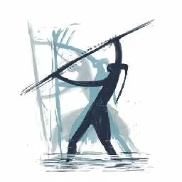

Piezas visuales
Ilustraciones digitales, un video reel y una campaña para redes.
Ver las piezasPiezas visuales, página web y recorrido virtual
Framelab desarrolló tres piezas que cuentan la memoria, la dignidad y la resistencia del pueblo Pijao desde distintos formatos.
Ilustraciones digitales, un video reel y una campaña para redes.
Ver las piezasSiete secciones que conectan historia, cultura, gastronomía y equipo.
Ver la páginaUn recorrido en realidad virtual por un territorio Pijao, con tres estaciones.
Ver el recorridoImágenes y video que llevan el proyecto a las redes sociales.



Ilustraciones digitales y un fotograma del video reel.
Dos piezas gráficas inspiradas en la cosmovisión, la orfebrería y el territorio Pijao.
Un relato corto que va del estigma colonial a «memoria, dignidad y resistencia».
Ver el reel en YouTubeContenido para redes que invita a conocer y proteger el territorio.
Ver la campaña en InstagramEl sitio que estás recorriendo: siete secciones pensadas para celular y computador, con navegación clara y contenido organizado para que sea fácil de encontrar.
Volver al inicioUn recorrido en 3D por un territorio Pijao, con tres estaciones: el umbral, el Bohío y una galería. Lleva la historia, la cultura y la cocina Pijao a una experiencia inmersiva.
Camino de entrada entre palmas de cuesco, con el Bohío al fondo y viviendas de bahareque alrededor. Los carteles «Bienvenidos» y «Resistencia Pijao» rompen el estigma colonial y recuerdan a caciques como Calarcá.
La casa ceremonial. Seis estaciones numeradas sobre la mesa —cuescos, pilón, olla en la hornilla, panela, colador y vasija— guían la preparación interactiva de la chicha de cuesco.
Siete marcos con fotografías y fuentes citadas: quiénes son los Pijao, historia y resistencia, cosmovisión, arte y oficios, la casa y el Bohío, gastronomía y chicha, y cómo apoyar el cuidado del territorio.